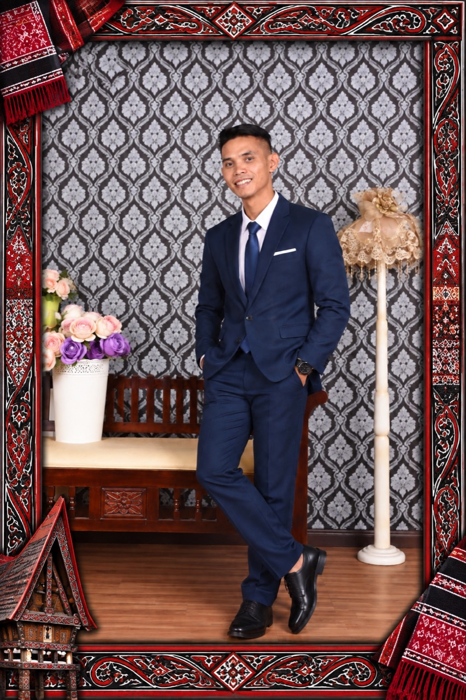
The Groom
Tanjung Mulia
Manurung
Putra dari
Bapak Pangihutan Manurung
dan Ibu Esnawati br. Tampubolon
Bapak Pangihutan Manurung
dan Ibu Esnawati br. Tampubolon
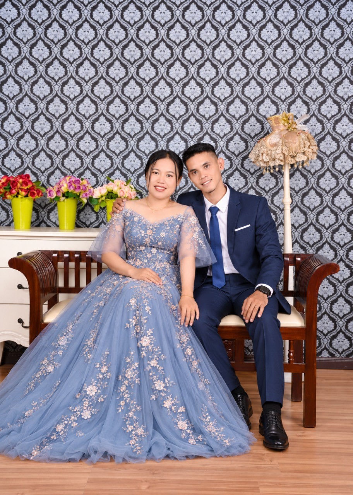
The Wedding Celebration Of
Kepada Yth.
Tamu Undangan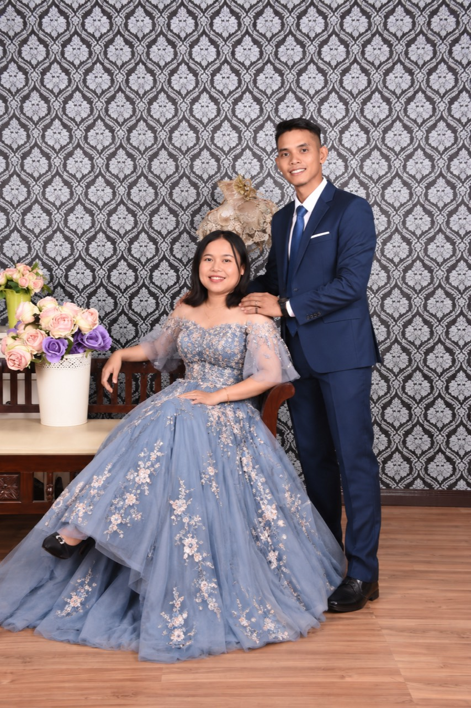
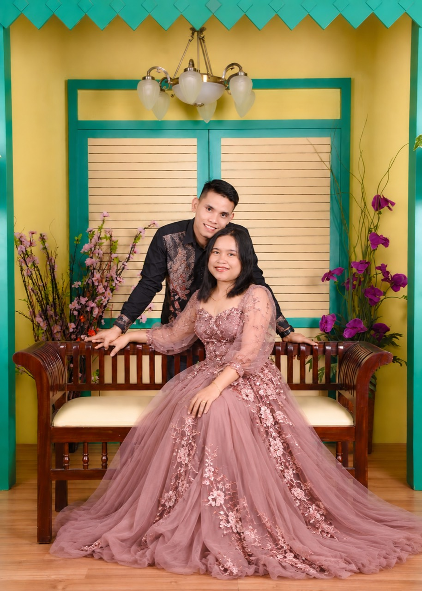
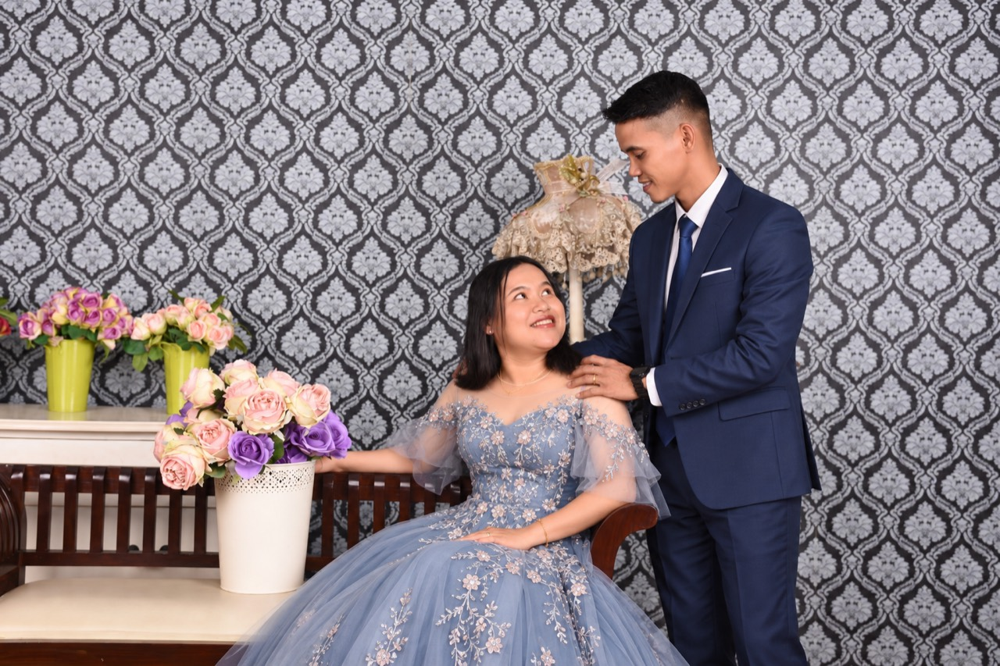
Horas · The Wedding of
Save the date
Menuju hari bahagia
Demikianlah mereka bukan lagi dua, melainkan satu. Karena itu, apa yang telah dipersatukan Allah, tidak boleh diceraikan manusia.
Matius 19:6
The Bride & Groom

The Groom
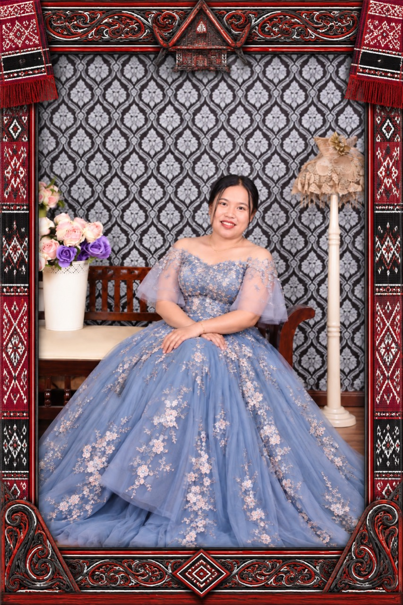
The Bride
The Celebration
Dengan penuh sukacita
Gereja HKBP Khatib Darus
Pekan Gebang, Langkat
Khatib Darus, Dusun VII
Kec. Gebang, Kab. Langkat
Our Story
Dari perkenalan sederhana hingga janji untuk melangkah bersama.
Kami berkenalan melalui media sosial, lalu bertukar nomor WhatsApp. Percakapan yang berlanjut perlahan menumbuhkan rasa nyaman dalam pertemanan kami.
Untuk pertama kalinya kami bertemu di sebuah warung kelapa. Kami duduk bersama, berbagi cerita tentang kehidupan dan pandangan akan masa depan, lalu mulai melangkah bersama dalam doa.
Setelah menjalani konseling pranikah bersama pendeta pembimbing, kami menyampaikan niat kepada keluarga. Kami mengucapkan janji pertunangan di Desa Laman Baru di hadapan orang tua, keluarga, jemaat gereja, dan masyarakat adat.
Captured Moments
Potret kebersamaan Tanjung dan Yuli.
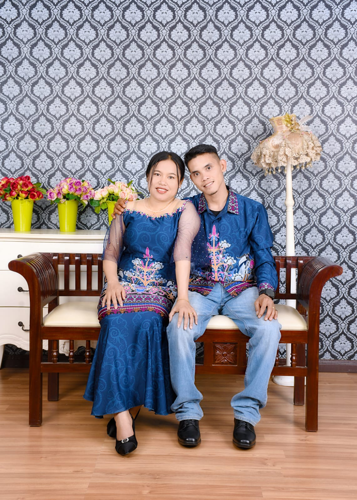
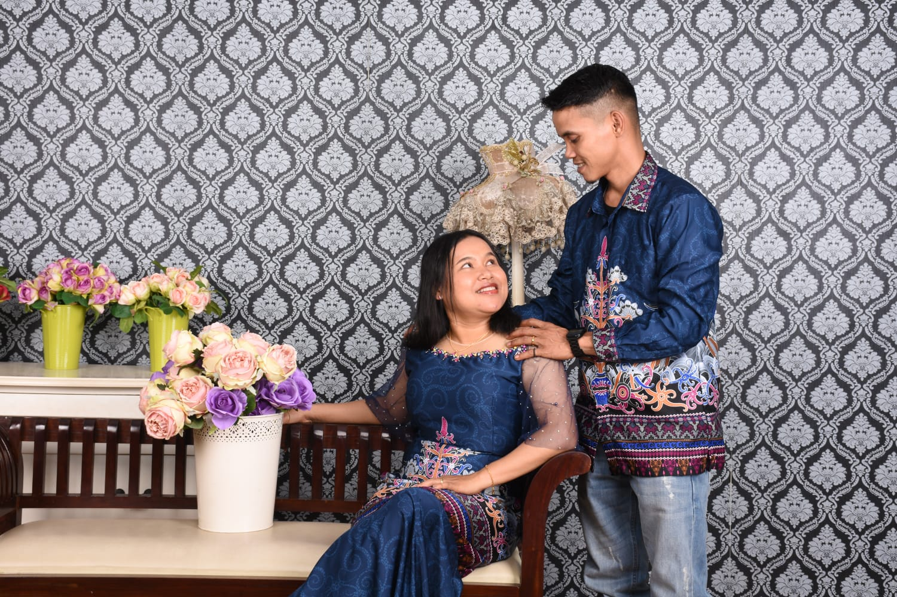
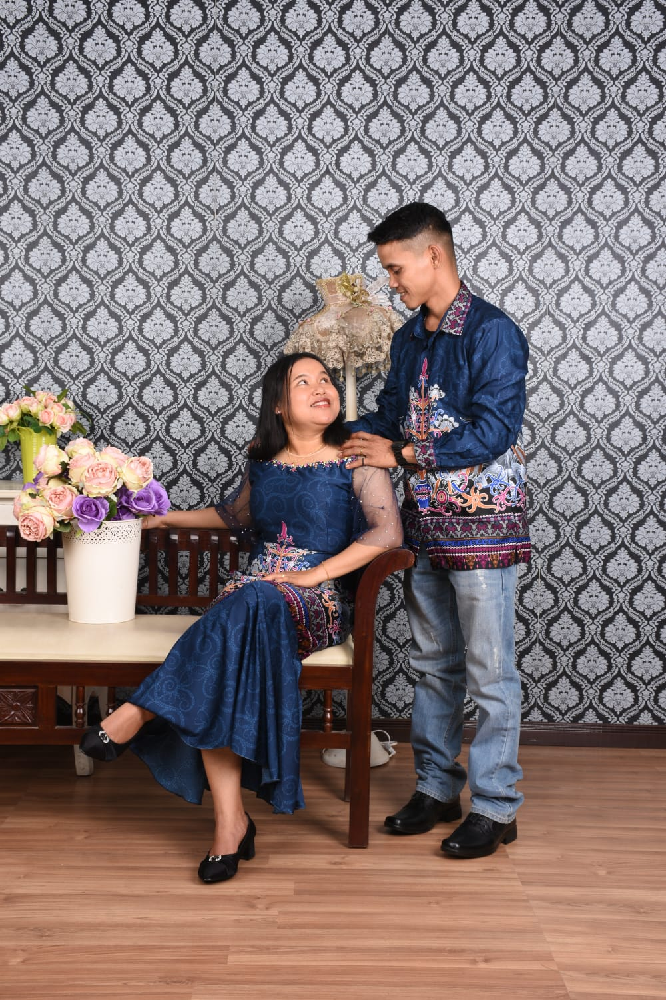
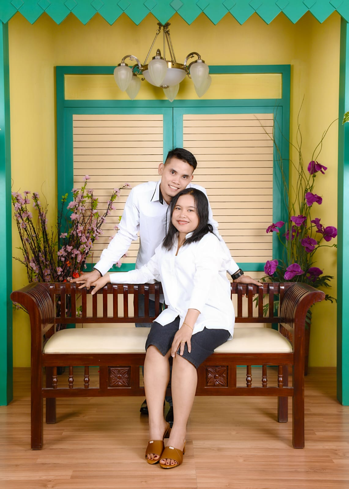
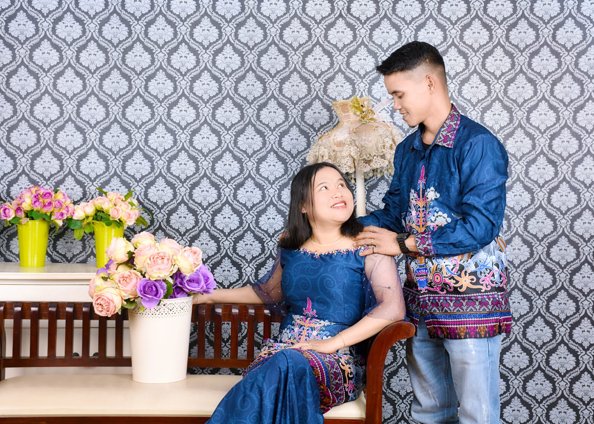
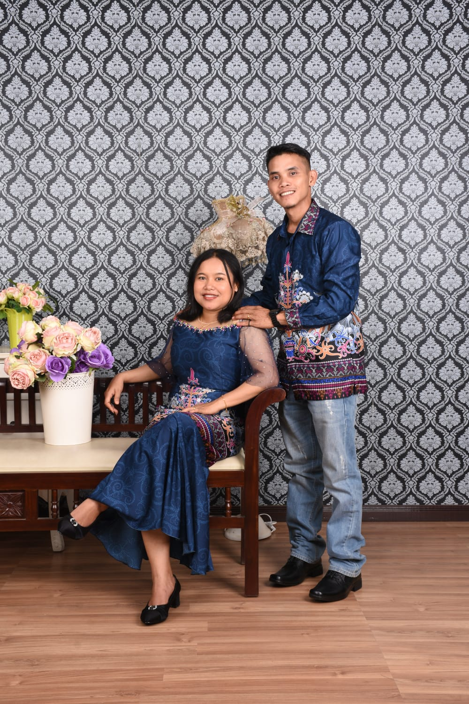
Wedding Gift
Kehadiran dan doa Anda adalah hadiah terindah bagi kami.
BNI1376838016
BNI1808158951
RSVP & Ucapan
Mohon konfirmasi kehadiran dan sampaikan doa terbaik Anda langsung di undangan ini.
DOA DARI ORANG-ORANG TERKASIH
Ucapan yang dikirim akan langsung tampil di sini.